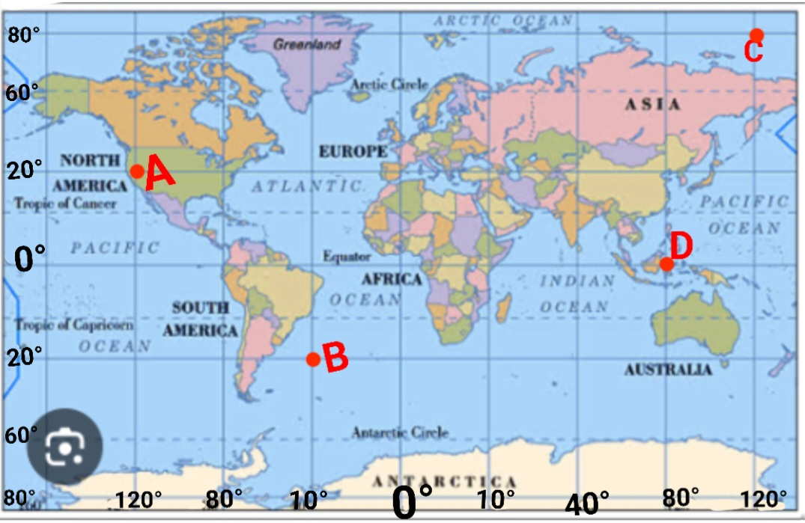

Kies telkens die korrekte antwoorde in elke vraag deur dit te onderstreep.
Gebruik die volgende woorde en voltooi die onderstaande sinne:
Noordpool, Ewenaar, Suidpoolsirkel, Kleinskaalkaart, Lenteligging,
Noordpoolsirkel, Grootskaalkaart, Breedteligging, Woordskaal, Lynskaal,
Suidpool, Greenwich Meridiaan
Beantwoord die volgende vrae so volledig as moontlik:
_____________________________________________________________________________________________________________
_____________________________________________________________________________________________________________
_____________________________________________________________________________________________________________
_____________________________________________________________________________________________________________
_____________________________________________________________________________________________________________
_____________________________________________________________________________________________________________
Bestudeer die kaart en gee die koordinate van punt die vier punte.
